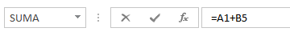
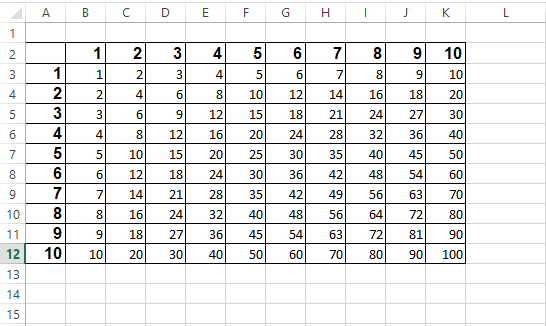
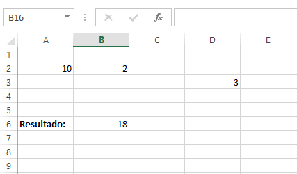
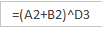
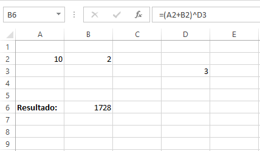

Excel
Edición de celdas
Si una celda contiene un dato que se desea modificar, bastará con situarse en la
celda correspondiente y rescribir el dato completo para sustituir al antiguo
Sin embargo, puede resultar pesado en el caso de que sólo sea necesario variar
mínimamente el dato antiguo para que quede escrito correctamente. Si esta es la situación,
se puede situar en la celda y pulsar la tecla F2 (o hacer doble clic en ella) lo que permitirá
modificar su contenido sin tener que escribirlo de nuevo completamente.
Cuando se está tecleando, el cuadro de texto de edición en la ventana de Excel
presenta un aspecto como este: 
-
La lista desplegable
(Cuadro de nombres) despliega una lista de nombres o funciones que se pueden añadir a la celda o emplearse
para acceder a su posición.
-
El botón
(Cancelar) se emplea para anular la introducción o modificación del dato que se ha estado escribiendo
en la celda.
-
El botón
(Introducir) aceptará el dato que se haya estado escribiendo en la celda, añadiéndolo a la hoja de
cálculo activa
-
El botón
(Insertar función) permite añadir una función de Excel
Bloques de celda (Rangos)
Existe un modo de referirse a un grupo de celdas contiguas, siempre y cuando
formen un rectángulo de celdas. Para ello, se utiliza la referencia de dos de ellas: la
superior izquierda y la inferior derecha del grupo.
Para referirse al grupo (rango) de celdas basta con escribir la primera, seguida de
dos puntos (:) y, a continuación, escribir la segunda.
Por ejemplo,
en la siguiente imagen puede apreciarse un rango de celdas ocupadas con datos. El rango
comenzaría por la celda cuya referencia es A2 (que es una celda vacia) y terminaría en
K12 (que contiene el dato 100). Para referirse a este rango se indicaría A2:K12.

Observaciones:
- Los rangos pueden recibir un nombre para que no sea
necesario especificar sus referencias constantemente.
- Los rangos se utilizan fundamentalmente en las funciones, ya que, en muchas de
éstas, debe indicarse un rango de celdas que será el grupo de datos que utilice la función.
Referencias
Las fórmulas pueden contener, aparte de datos numéricos simples, referencias a
datos de otras celdas
En la imagen siguiente obsérvemos que en la barra de fórmulas aparece el dato =B2+4^C3, que utilizará el
dato contenido en B2 (15) para sumárselo a 4 elevado a 2 (dato que aparece en C3). El resultado
de la fórmula aparece en la celda B5. Observe, por otra parte, que si teclea paréntesis en la
fórmula anterior el resultado variará ofreciendo un resultado diferente, ya que en ese caso
Excel suma primero B2 y 4 así el resultado lo eleva al cuadrado:
En la imagen siguiente obsérvemos que en la barra de fórmulas aparece el dato =10+ B2^D3, que utilizará el
dato contenido en A1 (10) para sumarlo con el resultado de elevar 2 (el valor que aparece en B2)
a la potencia 3 (dato que aparece en D3) y el resultado
de la fórmula aparece en la celda B6.

Observe, por otra parte, que si teclea paréntesis en la fórmula anterior 
el resultado variará ofreciendo un
resultado diferente, ya que en ese caso Excel suma primero 10 y B2 y el resultado lo eleva al 3
(dato que aparece en D3):

Referencias a datos de otras hojas
Cuando se desea utilizar una fórmula en la que hay un dato de otra hoja, es
necesario teclear el nombre de esa hoja para referirse al dato (se denomina vincular datos de
otras hojas). Se escribe dicho nombre seguido del signo de exclamación cerrado (!) y la
referencia de la celda.
Por ejemplo, si se ha de multiplicar por dos el dato que hay en la celda
C7 de la Hoja3 (suponiendo que el resultado deba aparecer en otra hoja), la forma correcta
de hacerlo sería:
=Hoja3!C7*2
Observacion
Si una fórmula calcula un resultado grande, es posible que la cifra que se obtenga
ocupe más espacio del que quepa en la columna. En ese caso, Excel suele ofrecer un
dato con muchas almohadillas:
########
Lo único que necesitará será ampliar la anchura de la columna hasta que el número
entre dentro sin problemas. Puede ampliar una columna haciendo clic entre sus letras
(por ejemplo, entre las letras de las columnas A y B) y, sin soltar el botón del ratón,
arrastrando a la izquierda o la derecha según necesite.
Referencias absolutas relativas y mixtas
El sistema de copiado de fórmulas funciona dado que, cuando se pegan, Excel
comprueba en qué dirección se hace para cambiar las referencias de la fórmula
adecuadamente. Estas referencias que cambian cuando se copia la fórmula se denominan
relativas. Sin embargo, existen casos en los que sería interesante que Excel no modifique la
referencia de alguna parte de la fórmula o en todas las referencias de la misma
Cuando esto es necesario se emplean referencias absolutas que llevan como
distintivo el símbolo $ (dólar) en cada uno de los componentes de la referencia. Por ejemplo,
la referencia relativa B5 se transforma en absoluta añadiéndole dicho símbolo a la B y al 5:
$B$5. Cada símbolo $ representa una parte de la referencia que quedará fija cuando se
copie.
Por lo tanto, cuando una fórmula tiene la referencia de una celda escrita de esta
forma y es copiada en otras celdas, no cambia. Resulta útil cuando parte de la fórmula depende
de un valor solitario escrito en una celda aislada, puesto que en el momento de copiar la
fórmula en otras celdas, dicho valor se encuentra solo y no repetido en las celdas contiguas.
Por último, también puede fijarse únicamente una de las coordenadas de la
referencia de una celda. Se lleva a cabo añadiendo el símbolo $ sólo en una sola de dichas
coordenadas: $B5 o B$5. La finalidad es copiar fórmulas de forma que sólo una parte de la
coordenada varíe y la otra quede fija al copiar la fórmula.
Truco: La tecla F4 cambia las referencias añadiendo los símbolos dólar o quitándolos si ya
estaban escritos. Simplemente hay que situarse en una referencia de cualquier
fórmula (viendo que el cursor parpadea en dicha referencia) y se pulsa F4.
Nombres para bloques de celdas
A un grupo de celdas (incluso a una sola) se le puede asignar un nombre. Así,
podremos utilizarlo en lugar de las referencias a esas celdas.
Para realizar los trabajos relacionados con el nombre de las celdas se accede al
grupo Nombres definidos de la pestaña Fórmulas en la cinta de opciones:
Tipos de datos
En una Hoja de cálculo, los distintos TIPOS DE DATOS que podemos introducir son:
-
Valores constantes Un dato que se introduce directamente en una celda. Puede ser un número, una fecha
u hora, o un texto. Si deseas una explicación más detallada sobre los valores constantes visita nuestro básico
sobre los tipos de datos
- Fórmulasuna secuencia formada por: valores constantes, referencias a otras celdas, nombres, funciones,
u operadores. Es una técnica básica para el análisis de datos. Se pueden realizar diversas operaciones con los
datos de las hojas de cálculo como +, -, *, /, Sen, Cos, etc. En una fórmula se pueden mezclar constantes, nombres,
referencias a otras celdas, operadores y funciones. La fórmula se escribe en la barra de fórmulas y debe empezar
siempre por el signo =.
Errores
Cuando introducimos una fórmula en una celda puede ocurrir que se produzca un error. Dependiendo del tipo de error
puede que Excel nos avise o no. Podemos detectar un error sin que nos avise cuando aparece la celda con un símbolo en la esquina superior
izquierda tal como esta 
Al hacer clic sobre el símbolo aparecerá un cuadro como información error que nos permitirá saber más sobre el error:
Dependiendo del tipo de error, al hacer clic sobre el cuadro anterior se mostrará un cuadro u otro, a veces
el error sea simplemente que la fórmula de la celda no tiene el mismo aspecto que todas las demás fórmulas adyacente
(por ejemplo, ésta sea una resta y todas las demás sumas).
Si no sabemos qué hacer, disponemos de la opción Ayuda sobre este error. Si lo que queremos es comprobar la fórmula
para saber si hay que modificarla o no, podríamos utilizar la opción Modificar en la barra de fórmulas. Si la
fórmula es correcta, se utilizará la opción Omitir error para que desaparezca el símbolo de la esquina de la celda.
Puede que al introducir la fórmula nos aparezca como contenido de la celda #texto, siendo texto un valor que puede
cambiar dependiendo del tipo de error. Por ejemplo:
| Mensaje |
Signficado |
| ##### |
se produce cuando el ancho de una columna no es suficiente o cuando se utiliza una fecha o una hora negativa. |
| #¡NUM! |
cuando se ha introducido un tipo de argumento o de operando incorrecto, como puede ser sumar textos. |
| #¡DIV/0! |
cuando se divide un número por cero. |
| #¿NOMBRE? |
cuando Excel no reconoce el texto de la fórmula.
|
| #N/A |
cuando un valor no está disponible para una función o fórmula. |
| #¡REF! |
se produce cuando una referencia de celda no es válida. |
| #¡NUM! |
cuando se escriben valores numéricos no válidos en una fórmula o función. |
| #¡NULO! |
cuando se especifica una intersección de dos áreas que no se intersectan. |